In Okayama, leaders are forging the future.
From global manufacturing companies and
entrepreneurs creating new value to key community figures.
30 stories at the forefront.


未来を創るリーダー
岡山には、未来を創るリーダーがいる。
世界と戦うモノづくり企業、
新たな価値を生み出す起業家、
地域の絆を深めるキーパーソン……
その最前線に迫る30のストーリー。


ABOUT RADIO MOMO
レディオモモについて
FM 79.0MHz
Radio MOMO（レディオモモ）は、株式会社岡山シティエフエムが運営する岡山のコミュニティFM放送局。1997年1月1日開局、周波数 FM 79.0MHz で、岡山市内および赤磐市の一部地域を放送エリアに、地域に根ざした情報をお届けしています。
公式サイトはこちら →